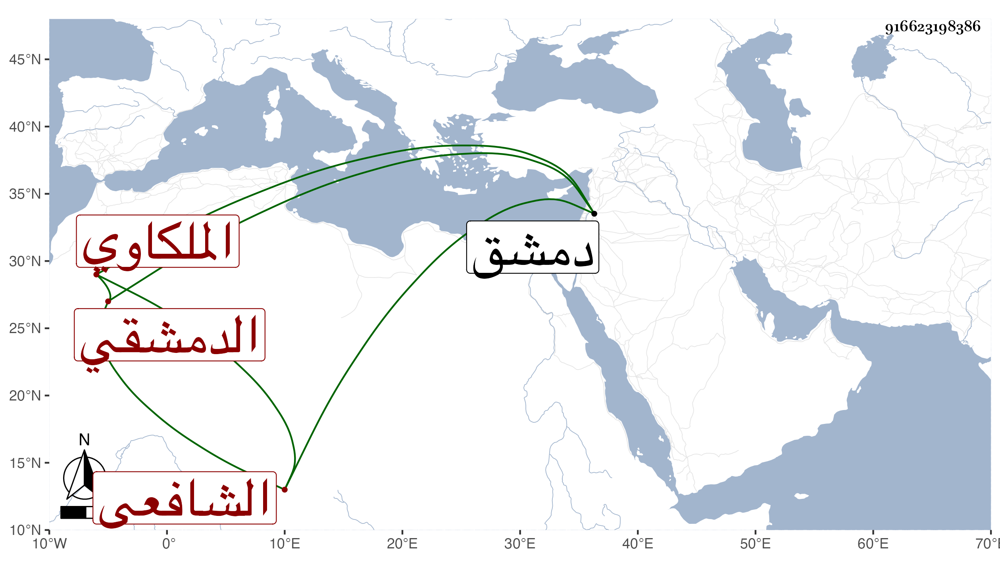

0902Sakhawi.DawLamic.ITO20230111-ara1.EIS1600.916623198386
Biography ID: 916623198386
إبراهيم بن محمد بن راشد برهان الدين الملكاوي الدمشقي الشافعي . قال شيخنا في أنبائه أحد الفضلاء بدمشق اشتغل وهو صغير وحصل ومهر في القراآت وكان يشتغل في الفرائض بين المغرب والعشاء بالجامع . مات في جمادى الآخرة سنة أربع وأشار لما ذكره عنه في حوادث التي قبلها وهو أنه قرأ على الجمال بن الشرائحي الرد على الجهمية لعثمان الدارمي فحضر عندهم الزين عمر الكفيري وأنكر عليهم وشنع وأخذ نسخة من الكتاب وذهب بها إلى القاضي المالكي وهو البرهان إبراهيم بن محمد بن علي التادلي الآتي فطلب القارى صاحب الترجمة فأغلظ له ثم طلبه ثانيا فتغيب ثم أحضره فسأله عن عقيدته فقال الإيمان بما جاء عن رسول الله صلى الله عليه وسلم فانزعج القاضي لذلك وأمر بتعزيره فعزر وضرب وطيف به ثم طلبه بعد جمعة لكونه بلغه عنه كلام أغضبه فضربه ثانيا ونادى عليه وحكم بسجنه شهرا .
